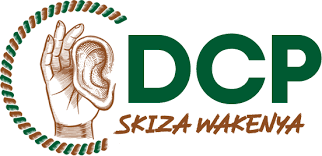
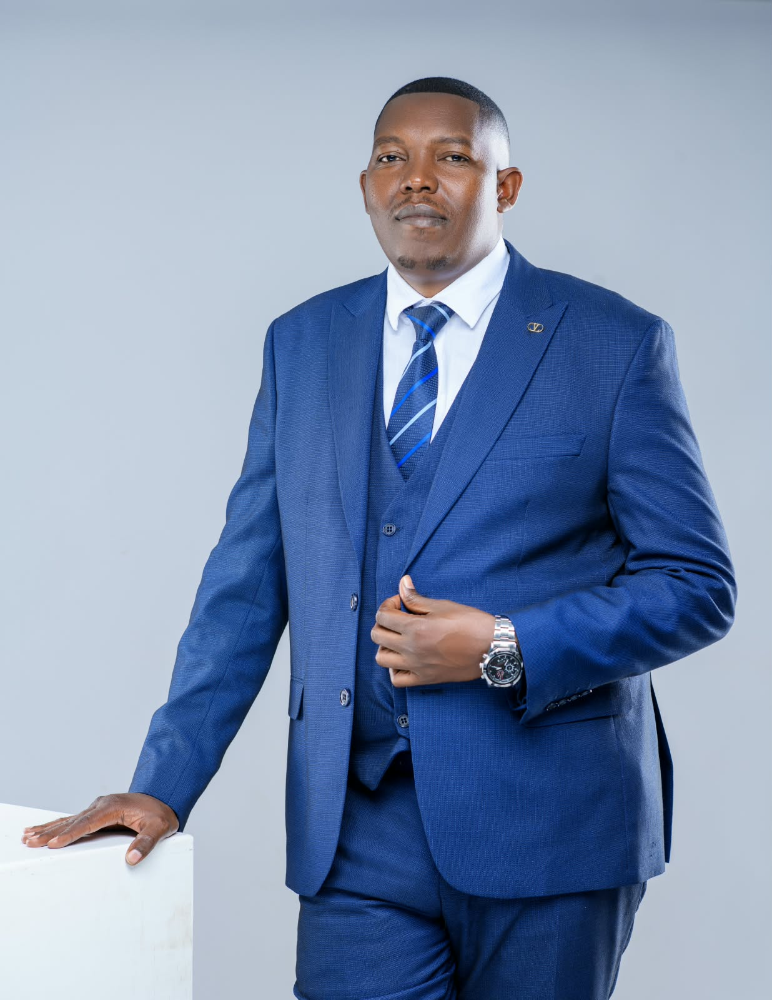
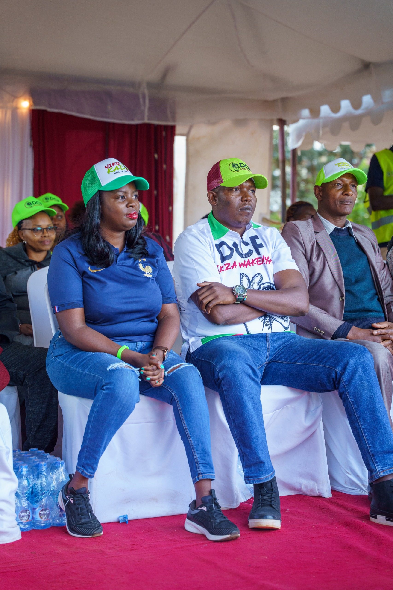
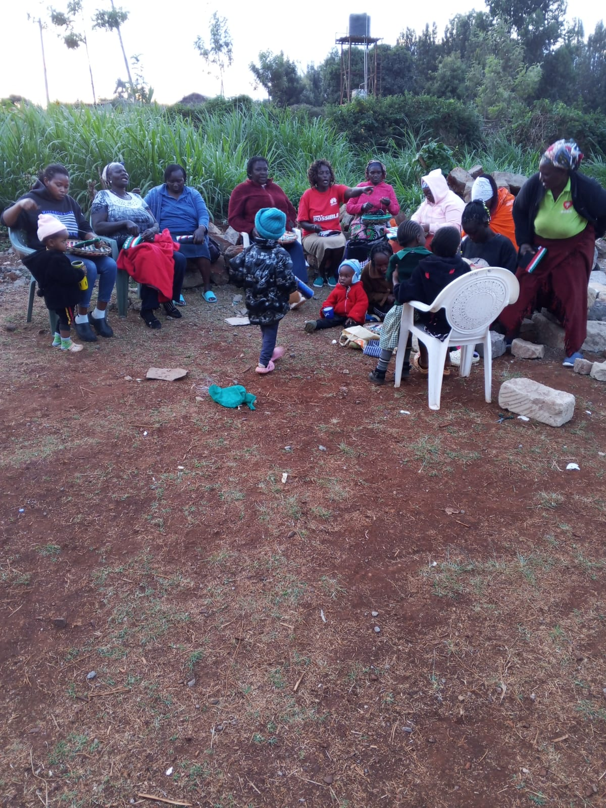

01
Everyday services
Listen to residents’ experiences with local services and work toward clear, practical improvements.
SAMPLE PRIORITY
LISTENING. LEARNING. SHOWING UP.
I’m Fredrick Njenga, an aspirant for Ndenderu Ward MCA in 2027. I believe good leadership starts by listening to the people who call this ward home.

I’m Fredrick Njenga. I’m proud to call Ndenderu home, and I’m stepping forward as an aspirant for Ward MCA in 2027. My first commitment is simple: to listen to residents, understand what matters in each neighbourhood, and work with the community on practical solutions.
SAMPLE COPY — Replace this introduction with Fredrick’s approved biography and personal story.
Start a conversation↗The priorities below are starter ideas for discussion. We’ll shape the campaign agenda with Ndenderu residents and publish confirmed commitments here.
SAMPLE THEMES — Confirm or replace these with the campaign’s actual priorities.Listen to residents’ experiences with local services and work toward clear, practical improvements.
SAMPLE PRIORITYMake room for young people’s ideas, skills and voices in the conversations shaping the ward.
SAMPLE PRIORITYKeep residents informed, invite feedback and make it easier to follow local decisions.
SAMPLE PRIORITYA few moments from recent community engagement. Every gathering is a chance to hear what residents care about.



Photos and video are campaign materials. Add captions, locations and dates once confirmed.
Have a thought, question or story to share? Reach the campaign team through the sample contact below. We welcome conversation.
+254 700 000 000 ↗SAMPLE WHATSAPP NUMBER — Replace before publishing. This button is intentionally not connected.